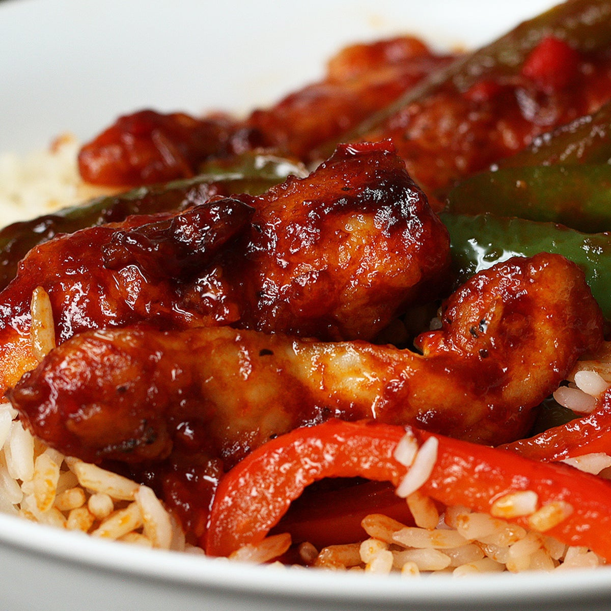

Here is a simple recipe to make a tasty chicken chilly:
Ingredients:
- 1 lb boneless, skinless chicken breasts, diced
- 2 tablespoons vegetable oil
- 1 medium onion, diced
- 3 garlic cloves, minced
- 1 red bell pepper, diced
- 1 green bell pepper, diced
- 2 tablespoons tomato paste
- 1 tablespoon soy sauce
- 1 tablespoon chili powder
- 1 teaspoon cumin
- 1 teaspoon paprika
- 1/2 teaspoon dried oregano
- 1/2 teaspoon salt
- 1/4 teaspoon black pepper
- 1 cup chicken broth
- 1 can of red kidney beans, drained and rinsed
- 1 can of diced tomatoes
- 2 tablespoons cornstarch
- 2 tablespoons water
Instructions:
- In a large saucepan or Dutch oven, heat the oil over medium heat. Add the diced chicken and cook until browned on all sides, about 5 minutes. Remove from the pan and set aside.
- Add the onion, garlic, red and green bell peppers to the pan and cook until softened, about 5 minutes.
- Stir in the tomato paste, soy sauce, chili powder, cumin, paprika, oregano, salt, and black pepper. Cook for 1-2 minutes, stirring constantly, until fragrant.
- Add the chicken broth, kidney beans, diced tomatoes, and the cooked chicken to the pan. Stir to combine.
- Increase heat to high and bring the mixture to a boil. Then reduce heat to low, cover the pan, and let it simmer for 20 minutes.
- In a small bowl, whisk together the cornstarch and water. Stir the cornstarch mixture into the chili and continue cooking until the mixture has thickened, about 5 minutes.
- Serve the chicken chili hot, garnished with shredded cheese, sour cream, and chopped green onions, if desired. Enjoy!
Enjoy your delicious chicken chilly!
Return to top
Return to main page